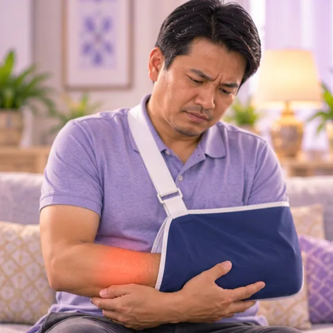

Partly dislocated elbow (radial head)
A young child's elbow joint slips slightly when the arm is pulled
What it is
A small bone at the elbow (the radial head) slips out of its ring of ligament, usually after a young child's hand or arm is pulled. The child stops using that arm.
- Elbow of one arm
- Mostly young children
- Child holds the arm still
- Which doctor
- Family doctor, paediatrician or hospital emergency
- Common in
- Young children, often after a pull on the hand or arm
- Contagious
- No
- Course
- A doctor can usually put it right quickly; it may happen again
Common signs

Arm hurts to move, in a slingUpper limb injury
More signs
- The arm hangs by the side, slightly bent
- Crying or fuss when the elbow or wrist is moved
- Little or no swelling or bruising
Why it happens
- Pulling a young child by the hand or arm
- Lifting or swinging a child by the arms
- Rolling over awkwardly on an arm
- A child's elbow ligaments are still loose, so it slips easily
See a doctor first if
- Any child who stops using an arm after a pull or fall: see a doctor promptly
- Swelling, bruising or a bent arm after a fall: go to hospital now
- A pale, cold or bluish hand, or numb fingers: go to hospital now
- Fever or the child seems very unwell
If any apply, please see a doctor before a session.
This page is general information. Please keep taking your normal medicine and keep seeing your doctor.
Keep taking your normal medicine and keep seeing your doctor. Our session is a gentle support and does not replace medical care.
Looking after yourself
- Keep the arm still and comfortable and see a doctor; do not try to push it back yourself
- Lift a child by the body or under the armpits, not by the hands or wrists
- Hold hands gently when walking and never swing a child by the arms
- Tell other carers how it happened so they avoid pulling too
Tell your therapist
- Broken, red or sore skin
- Fever or an active infection
Your therapist will go through this with you before starting.
Questions and answers
What is Partly dislocated elbow (radial head)?
A young child's elbow joint slips slightly when the arm is pulled. A small bone at the elbow (the radial head) slips out of its ring of ligament, usually after a young child's hand or arm is pulled. The child stops using that arm.
What are the common signs of Partly dislocated elbow (radial head)?
Arm hurts to move, in a sling
Why does Partly dislocated elbow (radial head) happen?
Pulling a young child by the hand or arm · Lifting or swinging a child by the arms · Rolling over awkwardly on an arm · A child's elbow ligaments are still loose, so it slips easily
How can I look after myself with Partly dislocated elbow (radial head)?
Keep the arm still and comfortable and see a doctor; do not try to push it back yourself · Lift a child by the body or under the armpits, not by the hands or wrists · Hold hands gently when walking and never swing a child by the arms · Tell other carers how it happened so they avoid pulling too
Can an AI Body Master session help with Partly dislocated elbow (radial head)?
A session is gentle, needle-free meridian support for your wellbeing. It does not treat or cure Partly dislocated elbow (radial head) and never replaces your medicine or your doctor. Tell your therapist about it before the session starts.
Related conditions
- Brachial plexus (shoulder-arm nerve) injury
- Ulnar nerve injury (little-finger side of the hand)
- Lost or severed finger
- Galeazzi fracture (forearm and wrist joint)
- Dislocated shoulder
- Broken shoulder blade
- Dislocated shoulder-top joint (AC joint)
- Rotator cuff injury
- Alzheimer's disease
- Cataract
- Seborrhoeic dermatitis (dandruff-type rash)
- Peeling lips (exfoliative cheilitis)
References: General information based on public health sources such as Mayo Clinic, NHS, Cleveland Clinic and NCBI StatPearls.
Page updated: 2026-11-01